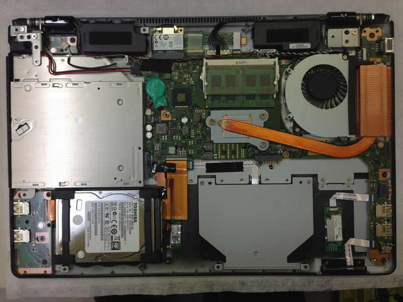
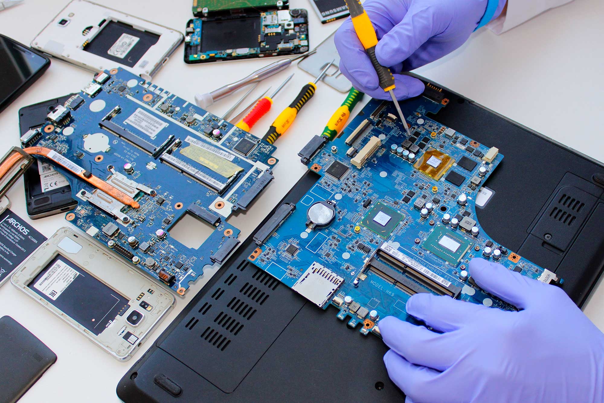
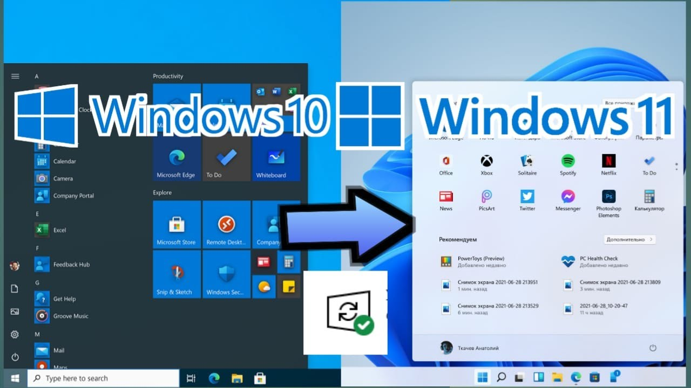
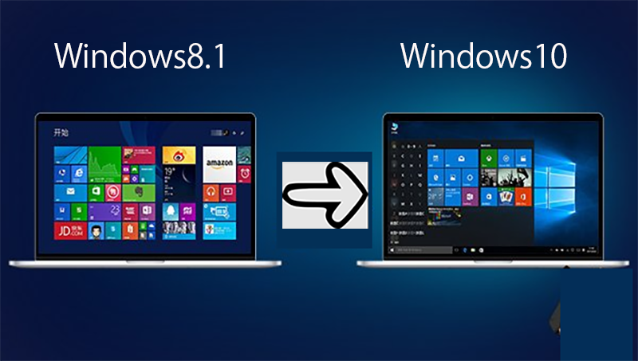
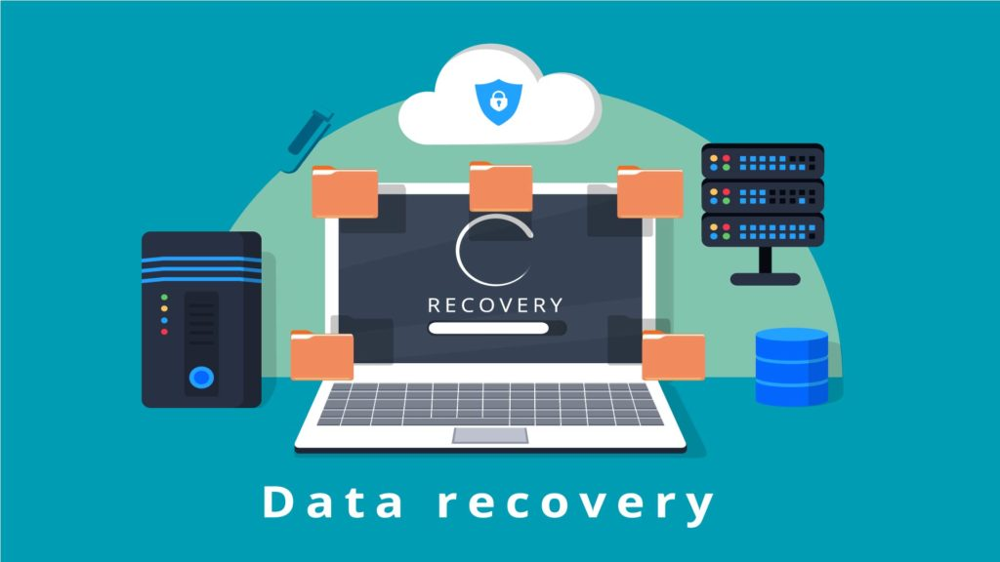

Diagnostic & Dépannage Informatique
Assistance complète, maintenance et remise en état de vos équipements informatiques (PC fixes et portables).
Mes prestations & savoir-faire :
Diagnostic de pannes matériel & logiciel
Identification précise des dysfonctionnements, erreurs système, lenteurs et pannes de composants.

Dépannage & Réparation de PC
Résolution de problèmes techniques, remplacement de pièces matérielles défectueuses et nettoyage de composants.

Installation de Systèmes d'Exploitation
Installation propre et configuration complète de Windows et Linux (Debian, Ubuntu...) adaptées à vos besoins.

Passage Windows 11 vers Windows11

Formatage & Remise à neuf
Réinitialisation sécurisée de vos machines, suppression des virus/malwares et optimisation des performances.
Récupération de données & Sauvegardes
Restauration de vos fichiers importants sur disques endommagés ou après un formatage accidentel, et mise en place de stratégies de sauvegarde.

/div>